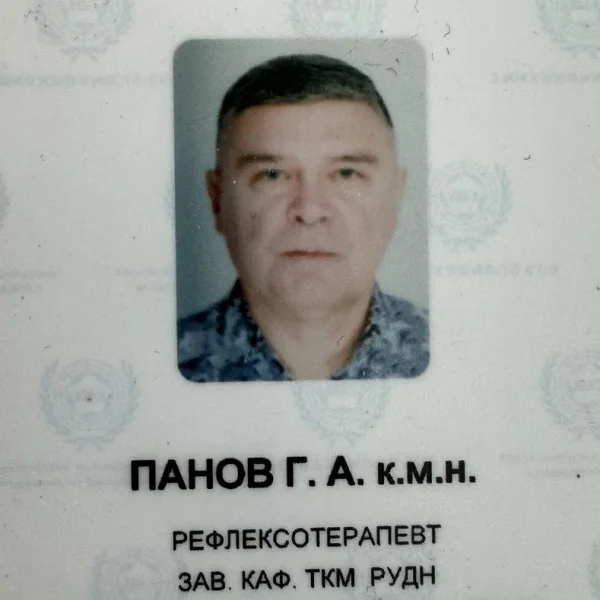
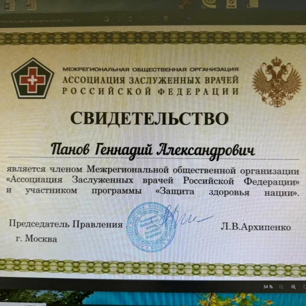

Практикует как традиционные методы лечения в неврологии (фармпрепараты и лечебные блокады), так и остеопатические подходы к лечению заболеваний опорно-двигательного аппарата, головных и мышечных болей.
Занимается коррекцией осанки у детей и лечением сколиозов.
Используя специальные техники остеопатии, снимает болевые синдромы у беременных женщин и готовит их к лёгким, успешным родам.
Владеет всеми видами рефлексотерапии, которая в его практике является самым эффективным, а во многих случаях единственным методом лечения протрузий, грыж межпозвонковых дисков позвоночника, болей практически любого происхождения, нарушения слуха, сна, лечения аллергических заболеваний, как у взрослых, так и детей – поллинозов, дерматитов, бронхиальной астмы, энуреза.
При помощи акупунктуры лечит функциональные виды бесплодия.
Применяет методики рефлексотерапии для снижения веса, проводит акупунктурный лифтинг лица и шеи для омоложения.
Владеет методикой игла-нож. Цзинь Гучжэнь терапия: мини-инвазивный метод акупунктуры.
Имеет большой опыт в рефлексотерапии и мануальной терапии. В мануальной терапии использует мягкие техники и остеопатию. Первичную специализацию по рефлексотерапии проходил на базе Московской медицинской академии им. И.М. Сеченова. Иглотерапии также обучался у лучших китайских профессоров из ведущих клиник Пекина, Тяньцзиня и Ланьчжоу.
Регулярно, в качестве руководителя группы возит российских врачей на учёбу в Китай. Специализация безоперационное лечение варикозной болезни, безоперационное лечение патологии позвоночника, восстановительное лечение в урологии, лечение аллергии, лечение аллергии у детей, лечение аллергических ринитов, лечение аллергодерматозов, лечение алопеции, лечение вегетососудистой дистонии, лечение геморроя, лечение гиперактивного мочевого пузыря, лечение гипертонии, лечение головных болей, лечение головокружения, лечение дискинезии желчевыводящих путей, лечение дисфункции яичников, лечение заболеваний желудочно-кишечного тракта, лечение заболеваний позвоночника, лечение кожного зуда, лечение межреберной невралгии, лечение миомы матки, лечение нарушений менструального цикла, лечение нарушений сна, лечение невритов, лечение нейродермита, лечение последствий острого нарушения мозгового кровообращения, лечение протрузий межпозвонковых дисков, лечение псориаза, лечение радикулопатии, лечение рефлюкс-эзофагита, лечение сосудистых заболеваний головного мозга Образование
В 1986 году закончил 1-й Московский медицинский институт им. И.М. Сеченова по специальности лечебное дело. Досрочно с отличием закончил аспирантуру по двум специальностям: физиологии и восстановительной медицине при Российском университете дружбы народов (РУДН), успешно защитив диссертацию кандидата медицинских наук.
Курсы повышения квалификации
Имеет специализации по неврологии, рефлексотерапии, мануальной терапии, лечебной физкультуре, спортивной медицине, курортологии и физиотерапии, а также по гомеопатии.
Участие в мероприятиях
С 2014 года является заведующим кафедрой китайской медицины Института восточной медицины РУДН. Автор 70 научных публикаций, в том числе в зарубежных журналах, а также, методических рекомендаций и учебного пособия и редактором китайско-русского и русско-китайского медицинского словаря. Постоянно принимает участие в различных симпозиумах, конференциях и конгрессах, в том числе проводимых в Китае. Входит в состав Экспертного состава Ассоциации Заслуженных врачей Российской Федерации, являясь заместителем председателя аттестационной комиссии.
Научная степень
Кандидат наук.
Профессор, академик Международной Академии специалистов оздоровительных практик.
Награждён медалью Рудольфа Вирхова
Профессиональный стаж 36 лет


Материалы института: itvm.ru ↗ · Информация на 26 октября 2026 года.